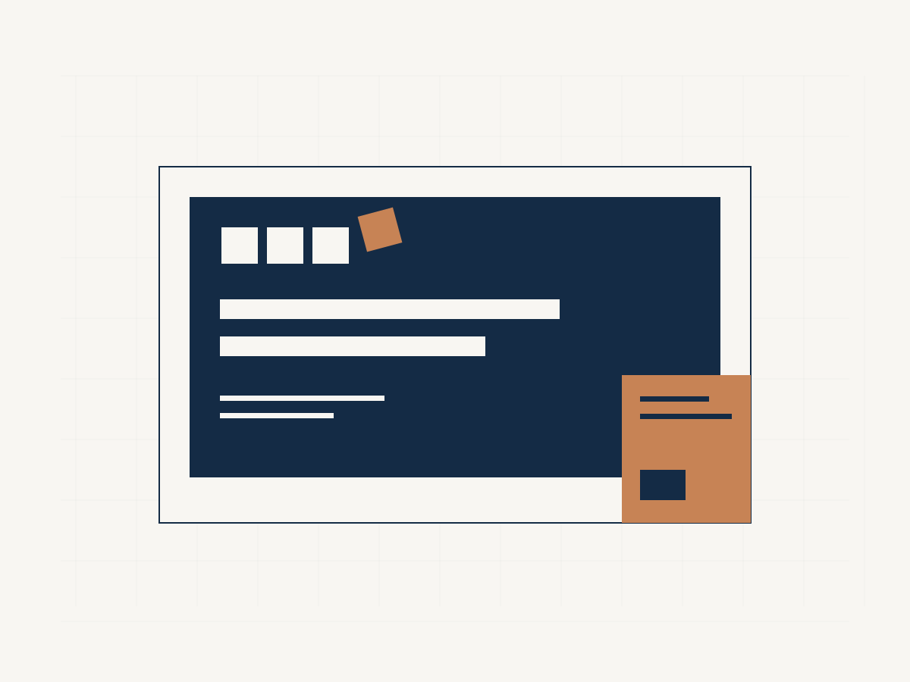
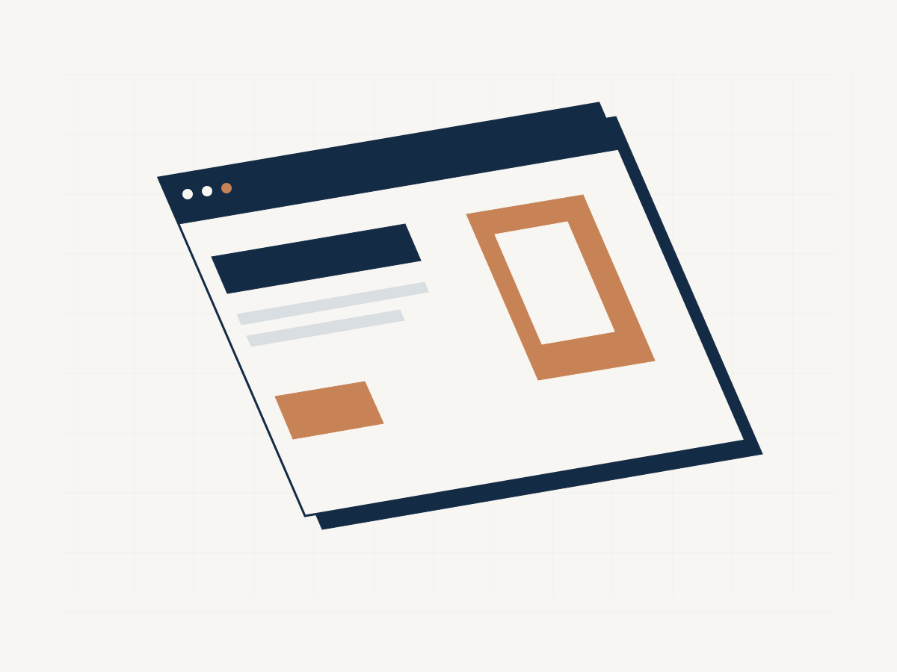
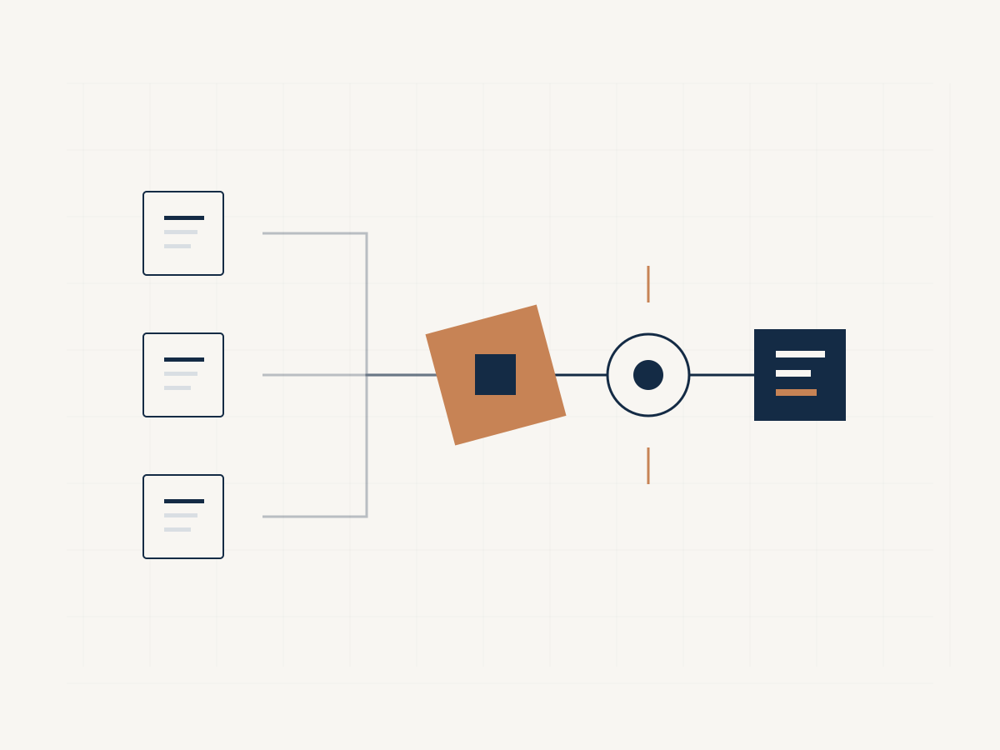
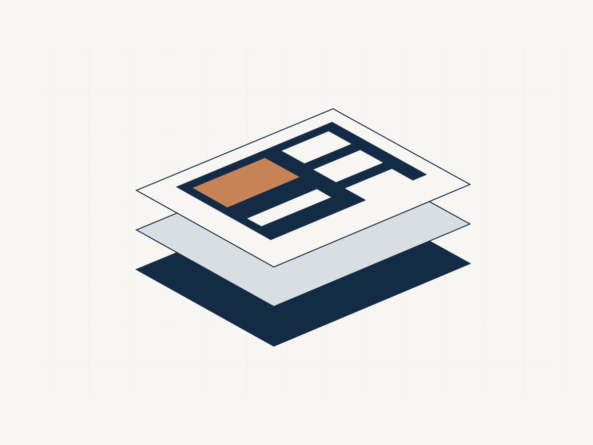
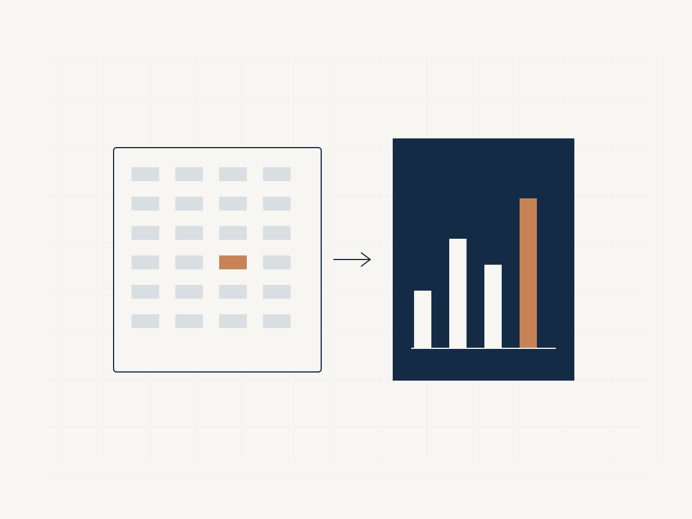
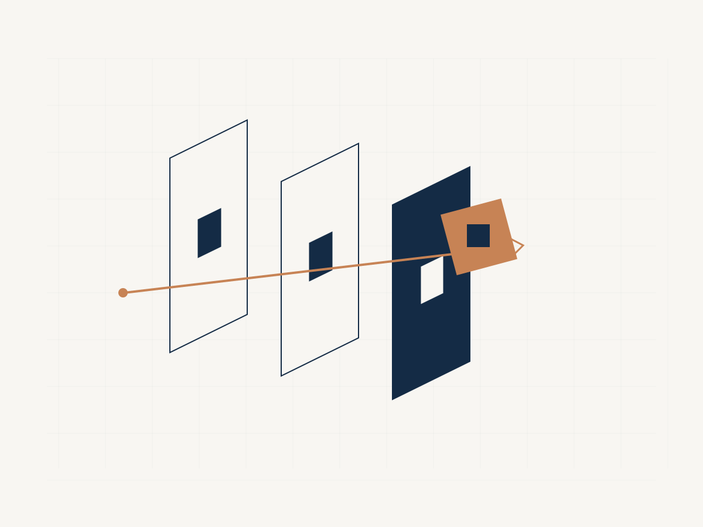

Diseño y tecnología
Tu negocio, mejor presentado. Tu trabajo, mejor conectado.
Diseñamos marcas y sitios web, desarrollamos agentes de IA y automatizamos procesos para empresas y profesionales. Con especial foco en estudios jurídicos.
Presentación
Una buena solución empieza por entender tu trabajo.
Una web que necesita actualizarse. Una marca que ya no representa lo que haces. Un proceso que depende de copiar información entre herramientas. El punto de partida puede ser distinto; el trabajo comienza por identificar qué necesitas y qué resultado quieres construir.
En Fuero de Serie conectamos diseño y tecnología para abordar esas necesidades con un alcance claro.
Servicios
¿Qué necesitas desarrollar?
-
01

Marca y comunicación
Identidades visuales, brochures, presentaciones y piezas para explicar tus servicios con coherencia.
-
02

Sitios web y posicionamiento
Creamos sitios, renovamos los existentes y trabajamos su estructura, contenidos y aspectos técnicos de posicionamiento.
-
03

IA y automatizaciones
Desarrollamos agentes de IA, asistentes e integraciones para apoyar tareas y conectar herramientas de trabajo.
-
04

Productos digitales
Te ayudamos a definir, prototipar y desarrollar una herramienta a partir de una necesidad concreta.
-
05

Datos y reportes
Organizamos información y construimos indicadores, reportes y vistas de consulta.
-
06

Seguridad digital
Implementamos y configuramos soluciones de seguridad según el entorno y el alcance acordado.
Puntos de entrada
Podemos partir desde donde estás.
Tienes una idea.
Revisamos el objetivo, las personas que la usarán y las funciones necesarias para definir un primer alcance.
Tienes algo que mejorar.
Evaluamos tu marca, sitio o proceso actual y proponemos ajustes sobre lo que ya existe.
Tienes una necesidad puntual.
Una presentación, un brochure, una integración o un reporte también pueden ser el punto de partida.
Método
Así trabajamos.
Entendemos.
Conversamos sobre tu actividad, la necesidad y las herramientas disponibles.
Definimos.
Acordamos alcance, entregables, etapas y condiciones del proyecto.
Desarrollamos.
Diseñamos o implementamos la solución con revisiones en los hitos definidos.
Entregamos.
Revisamos el resultado y dejamos los materiales, accesos y documentación incluidos en el acuerdo.
Especialidad
Conocemos el mundo legal. También trabajamos con otros sectores.
Fuero de Serie nace de la experiencia de Luca Martino Acevedo como abogado y desarrollador. Esa combinación orienta nuestro trabajo con estudios jurídicos: desde la forma de presentar sus servicios hasta los procesos que necesitan ordenar o conectar.
La misma oferta está disponible para empresas y profesionales con desafíos de diseño y tecnología.
Sobre la marca
Luca Martino Acevedo · Abogado y desarrollador.
Fuero de Serie es el espacio donde reúno el diseño, el desarrollo web y la creación de agentes de IA y soluciones digitales. Me interesa que cada proyecto tenga una función clara y que puedas entender cómo utilizar lo que construimos.

Hablemos
Cuéntanos qué necesitas crear, mejorar o conectar.
Puede ser una web completa, un agente de IA, una automatización específica o una idea que todavía necesita definirse. Conversemos sobre el punto de partida.